How industry engagement supports students
In-person learning makes professional connection more natural: students meet peers, faculty, alumni, guest speakers, and industry professionals throughout the program.
For partner organizations
Work with students on original analysis with faculty oversight.
Industry partners may guide the program, sponsor student thesis projects, provide access to internship programs, and work with faculty and students on analysis that addresses real scientific or business problems.
Faculty advisors ensure the statistical integrity of the work. When students work with proprietary data, partners must agree that the student can publish the thesis, which often involves anonymizing or removing any potentially sensitive information.
Partner opportunities
The site can highlight several ways organizations connect with the MASDS community.
Current partners
MASDS works with organizations that support applied learning, professional networking, internships, and thesis projects.
AutoUnify
Briarmont
Evitarus
Kukuyeva Consulting
Latino Donor Collaborative
MiORA
PMI-LA
RedSky Strategy
Sound Ethics
Thirty Minute Mentors
tixr
UCLA CEILS
UCLA Library Data Science Center
UpTempo
Vetology
WagerWire
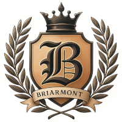
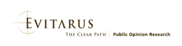
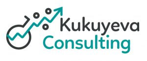
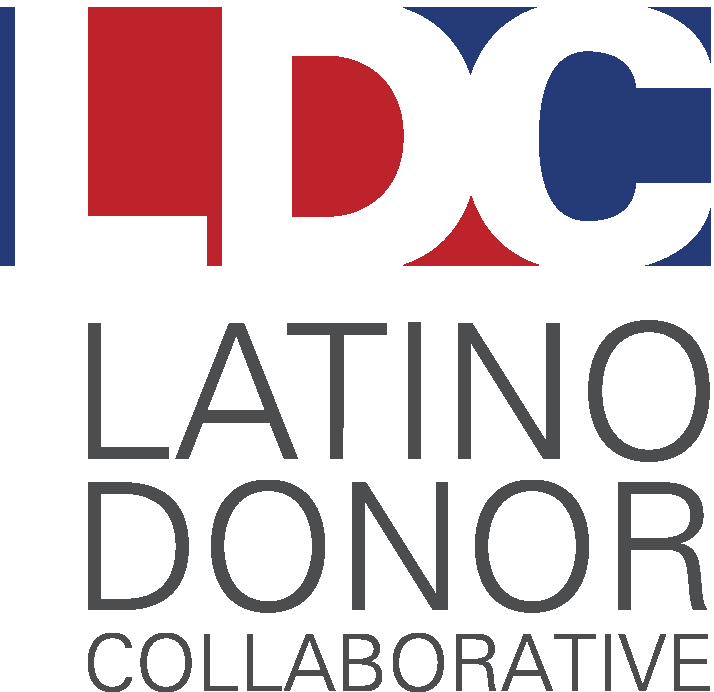
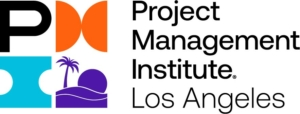
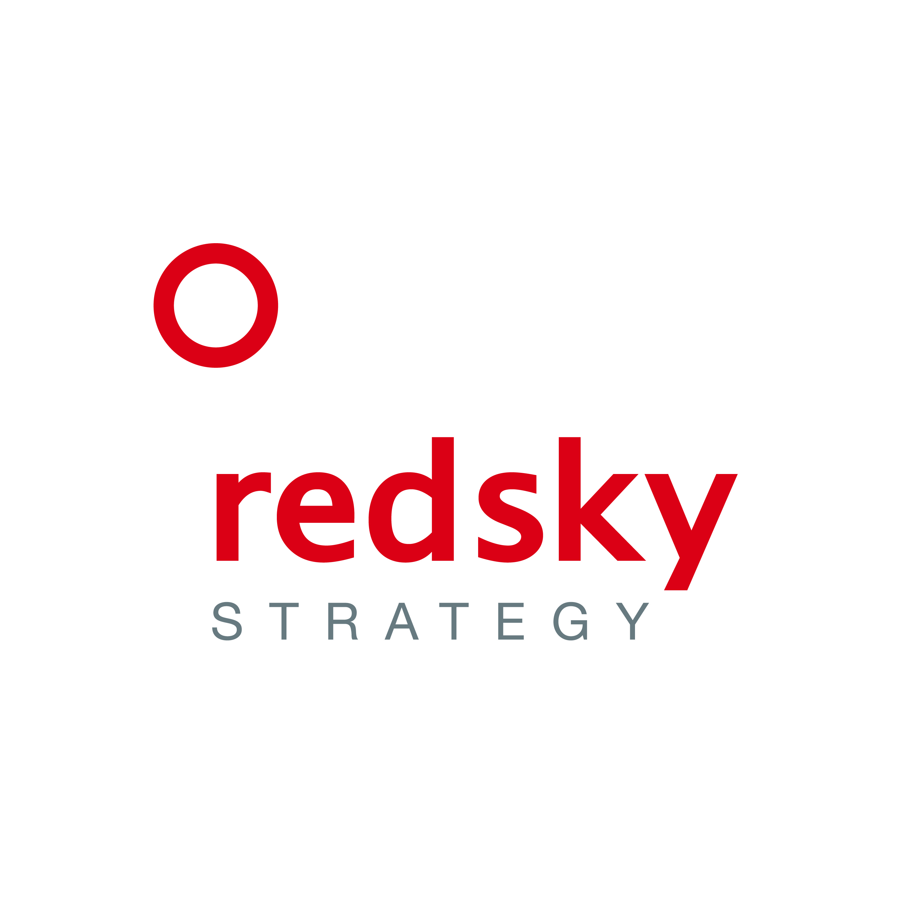
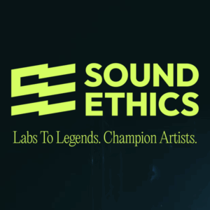
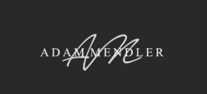
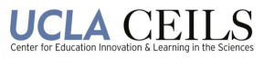
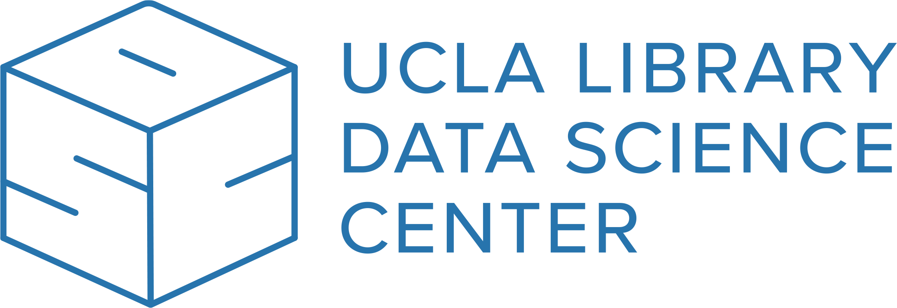
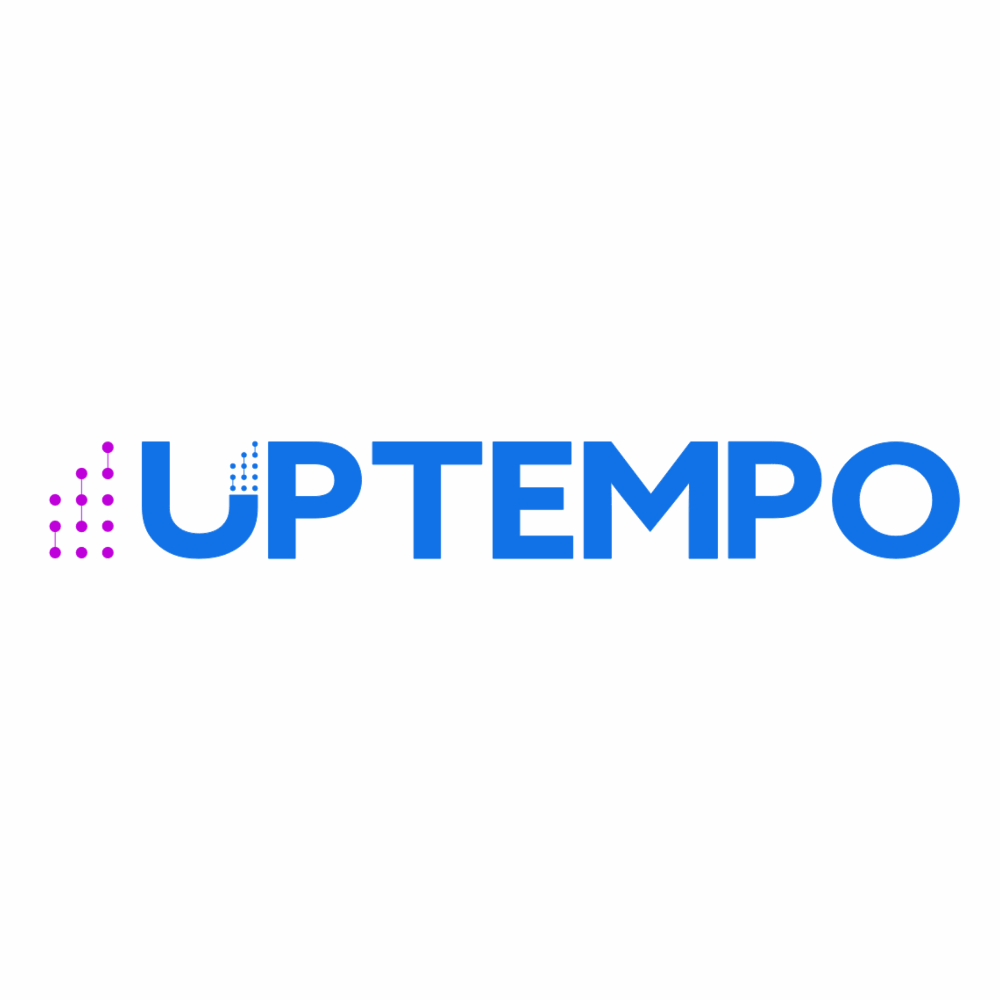
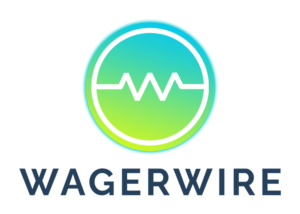